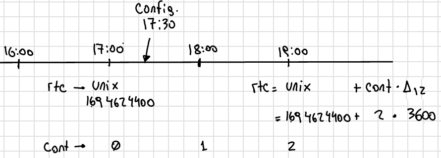
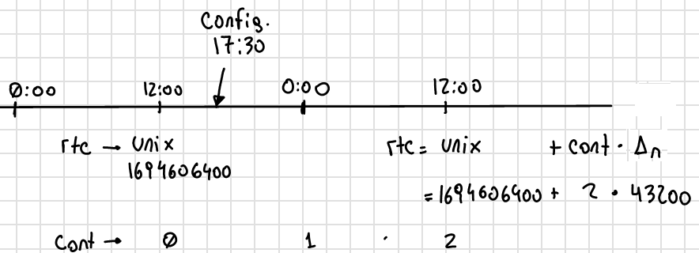

Versionado
Todos los cambios notables en este proyecto van a ser documentados aquí.
Las entradas más recientes se colocan arriba.
Este proyecto adhiere a Semantic Versioning.
Nomenclatura
Major: se incrementa cuando se hacen cambios incompatibles con versiones anteriores.Minor: se incrementa cuando se agregan nuevas funcionalidades de forma compatible con versiones anteriores.Patch: se incrementa cuando se realizan correcciones de errores o cambios menores de forma compatible con versiones anteriores.
Tipos de cambios
Addedpara funcionalidades nuevas.Changedpara los cambios en las funcionalidades existentes.Removedpara las características en desuso que se eliminaron en esta versión.Fixedpara corrección de errores.
Versión 6
V6.1.0 - 13/09/2023
Changed
unix time de config: cada vez que el equipo se despierta por timer y falla la inicialización del ds3231, el rtc interno se setea con el valor del unix de la última vez que se configuró el equipo más una cantidad de segundos que es igual al intervalo de medición multiplicado por el número de veces que el equipo se despertó por timer.
Por ejemplo, si el equipo está en modo 12 y se configuró a la 17:30, entonces el tiempo unix de referencia se situa a la 17:00 y un contador interno en 0. Entonces, si el equipo se despierta a la 19:00 y el ds3231 no se inicializó, el rtc se sitúa en
unix + cont · Δ12.Si el equipo está configurado en modo normal, entonces el tiempo unix de referencia se situa a la 12:00. Si el equipo se despierta 24 hs después, entonces el rtc se sitúa en
Así, suponiendo que la inicialización del ds3231 falló y el equipo se configuró a la 17:30, el tiempo unix de referencia (si el modo 12 está activado) va a ser la 17:00; y si el equipo
unix + cont · Δn.Warning
Para que el equipo se setee bien, hay que seguir estos pasos:
Configurar el equipo normalmente.
Usar la palabra clave “modo12” 1 o 2 veces para des/activar el modo 12.
Salir del menú “Configuración” y volver a entrar para que se configure bien el tiempo unix de referencia.
V6.0.2 - 12/09/2023
Fixed
Envío duplicado: cuando se enviaba por un json con un timestamp futuro, se corregía pero el json corregido se enviaba 2 veces.
V6.0.1 - 10/09/2023
Fixed
Seteado de Rtc interno y externo: había problemas con el seteado del rtc interno y del ds3231 a parti del tiempo unix.
V6.0.0 - 08/09/2023
Changed
Medición de nivel promediado: la medición de un sensor de nivel antes era:
Se alimenta sensor
Se espera 14 segundos
Se toma una medición
Se desalimenta el sensor
Se procesa la respuesta y se obtiene el valor del nivel medido
Ahora se hace:
Se alimenta sensor
Se toma una medición
Se procesa la respuesta y se obtiene el valor del nivel medido
Se espera 1 segundo
Se repite los 30 veces 3 pasos anteriores (2 al 4)
Se desalimenta el sensor
Se promedia los 30 valores de nivel y no se tiene en cuenta las mediciones en 0 ni las que se alejen demasiado del promedio de las dos últimas mediciones.
Versión 5
V5.3.0 - 08/09/2023
Changed
Apn de Movistar: antes era:
apn: wap.gprs.unifon.com.ar user: wap pwd: wap
y ahora es:
apn: gm2m.movistar user: gm2m pwd: gm2m
V5.2.2 - 07/09/2023
Fixed
Comunicación con la app: se arreglaron algunos fallas con la comunicación con la app.
Added
Palabra clave “reset”: resetea el esp32, al igual que apretar el botón EN en la placa de desaroollo. Esto se hace debido a que a veces el equipo muestra comportamientos no esperados.
Warning
Al hacer esto, la red wifi se apaga y se la tiene que volver a generar con el pulsador magnético.
V5.2.1 - 30/08/2023
Changed
Palabra clave “chequeo”: se agrega información de los modos 12 y offline y del número de mediciones guardadas.
HTTP/1.1 200 OK Content-Type:text/plain;charset=UTF-8 Chequeo: ======== - Tarjeta SD: ok - Reloj externo: ok - Salidas: · 1) ok · 2) No configurado · 3) No configurado · 4) No configurado - Modo 12: No - Modo offline: Sí - Mediciones guardadas: 3
En donde las últimas líneas resaltadas son las agregadas.
V5.2.1 - 29/08/2023
Changed
Respuesta de configuración ok: cuando la configuración se hace bien, se guarda y se envía, se responde a la app el siguiente http_response:
HTTP/1.1 200 OK Content-Type:text/plain;charset=UTF-8 Equipo configurado ================== 1: 10.00 metros (the) 2: No configurado 3: No configurado 4: No configurado
Respuesta de configuración con json mal formado: cuando la app manda un json mal formado, la http response es:
HTTP/1.1 200 OK Content-Type:text/plain;charset=UTF-8 Json inválido
Respuesta de configuración con modo offline: si el equipo está con el modo offline activo y la app envía una petición para hacer una configuración, ésta se hace pero no se envía; la http response es:
HTTP/1.1 200 OK Content-Type:text/plain;charset=UTF-8 Modo offline activo. Configuración hecha, pero no enviada Equipo configurado ================== 1: 10.00 metros (the) 2: No configurado 3: No configurado 4: No configurado
Respuesta de configuración con problemas de conexión: si el equipo recibe una petición para configurarlo y hay problemas de conexión, el chip está mal colocado o no tiene datos activados, la configuración se hace pero no se envía. La http response es:
HTTP/1.1 200 OK Content-Type:text/plain;charset=UTF-8 Problemas de conexión. Chip mal colocado o sin datos. Configuración hecha, pero no enviada Equipo configurado ================== 1: 10.00 metros (the) 2: No configurado 3: No configurado 4: No configurado
Respuesta de configuración con problemas del servidor: si el equipo recibe una petición para configurarlo y se logra conectar a internet pero no al servidor, la configuración se hace pero no se envía. La http response es:
HTTP/1.1 200 OK Content-Type:text/plain;charset=UTF-8 Problemas de servidor. Configuración hecha, pero no enviada Equipo configurado ================== 1: 10.00 metros (the) 2: No configurado 3: No configurado 4: No configurado
Respuesta a palabra clave “modo12”: al usar la palabra clave “modo 12”, se des/activa el modo 12, y el http response depende de si el modo 12 está activado o no. Si está activado, es:
HTTP/1.1 200 OK Content-Type:text/plain;charset=UTF-8 Modo 12: · Medición cada 1 hs · Envío cada 12 hs · Envíos a la 00:00 y 12:00 hs
Si está desactivado, es:
HTTP/1.1 200 OK Content-Type:text/plain;charset=UTF-8 Modo normal: · Medición cada 24 hs · Envío cada 24 hs · Envíos a la 12:00 hs
Respuesta a palabra clave “offline”: al usar la palabra clave “offline”, se des/activa el modo offline, y el http response depende de si el modo offline está activado o no. Si está activado, es:
HTTP/1.1 200 OK Content-Type:text/plain;charset=UTF-8 Modo offline: las mediciones NO se envían, sólo se guardan
Si está desactivado, es:
HTTP/1.1 200 OK Content-Type:text/plain;charset=UTF-8 Modo online: las mediciones se envían normalmente
Respuesta a configuración con problemas de sensor: si el equipo recibe una petición de configuración, pero hay problemas con un sensor en una salida, no se toca la configuración anterior y el http response es:
HTTP/1.1 200 OK Content-Type:text/plain;charset=UTF-8 Problemas con la salida 1. Revise conexión
Warning
Cuando se detecta problemas en una salida, se interrumpe la configuración y no se sigue con la siguiente. Por ejemplo, si se quiere configurar sensores en las salidas 1 y 2 y ambos están descoenctados, entonces se muestra el mensaje anterior, pero no hay forma de saber el estado de la salida 2. Por eso hay que corregir el el problema en la salida 1 e intentar configurar de nuevo para saber si el sensor en la salida 2 responde bien.
Respuesta a palabra clave “erase”: se borra la la configuración y http response es:
HTTP/1.1 200 OK Content-Type:text/plain;charset=UTF-8 La configuración ha sido borrada
Respuesta a palabra clave “eeprom”: devuelve el json de configuración que se arma para enviar al servidor.
HTTP/1.1 200 OK Content-Type:text/plain;charset=UTF-8 { "id": "L-7BF4", "product": "THSST", "soil_type": "Arcilloso", "location_name": "holas", "location": { "latitude": -31.44030952, "longitude": -64.20405579 }, "sensors": { "00000000001": { "type": "the", "tag_depth": "10.00" } } }
Respuesta a palabra clave “chequeo”: chequea el estado del equipo y devuelve el resultado:
HTTP/1.1 200 OK Content-Type:text/plain;charset=UTF-8 Chequeo: ======== - Tarjeta SD: ok - Reloj externo: ok - Salidas: · 1) ok · 2) No configurado · 3) No configurado · 4) No configurado
Respuesta a palabra clave “regall”: devuelve el archivo “regall.txt”:
HTTP/1.1 200 OK Content-Type:text/plain;charset=UTF-8 [ {json_measure_0} ,{json_measure_1} ,{json_measure_2} ,... ,{json_measure_n} ]
Respuesta a palabra clave “voltaje,”: setea el coeficiente de voltaje y devuelve:
HTTP/1.1 200 OK Content-Type:text/plain;charset=UTF-8 Coeficiente de voltaje seteado en 1.02
V5.2.0 - 28/08/2023
Added
Funcionalidad para guardar registro: se guarda registro en la memoria SD para las peticiones updateDate y setConfig.
V5.1.0 - 24/08/2023
Added
Respuesta a la palabra clave “modulo”: se elimina y se recrea el archivo “register.txt”, que es en donde se guardan las mediciones no enviadas. La HTTP response es:
HTTP/1.1 200 OK
Content-Type:text/plain;charset=UTF-8
Memoria SD formateada
Respuesta a configuración en offline: cuando el equipo está en modo offline y la app manda la petición para configurarlo, la configuración se hace pero no se envía el metadata al servidor. La HTTP response es:
HTTP/1.1 200 OK
Content-Type:text/plain;charset=UTF-8
Configuración hecha pero no enviada, el equipo está
en modo offline
V5.0.1 - 30/06/2023
Fixed
Respuesta al modo12: se cambia el mensaje cuando el modo12 está activado. Pasa de ser:
"Modo Ledesma: se mide cada 1..."
a ser:
"Modo 12: se mide cada 1..."
Added
Se muestra tipo de sensor en respuesta a “eeprom”: cuando se responde a la palabra clave “eeprom”, ahora se muestra el tipo de sensor, y si es de tipo “nivel”, se muestran metros en lugar de cm. La respuesta pasa de ser:
O2) 12.00 cm
O3) 2.00 cm
a ser:
O2) 14.00 cm (the)
O3) 2.00 m (nivel)
V5.0.0 - 29/06/2023
Changed
Json que la app manda al equipo: se cambia el json que la app le manda al equipo para configurarlo. En particular, se eliminan los espacios en el nombre del siguiente campo:
"Salida 1 (o1)": 100,
ahora es:
"Salida1(o1)": 100,
El json entonces pasa de ser:
{
"soil_type": "Arcilloso",
"location_name": "Hola",
"sensors": {
"Salida 2 (o2)": {
"type": "nivel",
"tag_depth": 20
}
},
"location": {
"latitude": -31.4403103,
"longitude": -64.2040562
}
}
a ser:
{
"soil_type": "Arcilloso",
"location_name": "Hola",
"sensors": {
"Salida2(o2)": {
"type": "nivel",
"tag_depth": 20
}
},
"location": {
"latitude": -31.4403103,
"longitude": -64.2040562
}
}
El siguiente gráfico muestra resaltado el campo modificado.


Added
Documentación “modo12” y “modooffline”: faltaba documentar lo que significaban estos modos.
Modo |
Intervalo de medición (hs) |
Intervalo de envío (hs) |
Hora de envío |
|---|---|---|---|
12 |
1 |
12 |
0:00 y 12:00 |
Normal |
24 |
24 |
12:00 |
Note
Cuando el modo offline está activo, el equipo no enciende el módulo SIM808 para enviar datos, así que solamente los guarda en la memoria SD.
Versión 4
V4.2.2 - 27/06/2023
Fixed
Modo12 y modooffline: había un problema en la declaración de una variable que no permitía que las variables booleanas relacionadas a esos modos se guardaran de forma correcta. Corregido.
V4.2.1 - 27/06/2023
Fixed
Modo ledesma: había errores en el enviado de las mediciones.
V4.2.0 - 27/06/2023
Added
Modo offline: se agrega la palabra clave “offline”, para decirle al equipo que no hay cobertura así no enciende el módulo sim después de realizar la medición.
Note
- Cada vez que se agrega un campo a la estructura de la eeprom, se deben seguir los siguientes pasos:
Agregar escritura en la función Eeprom1::setStruct
Agregar escritura en la función Eeprom1::erase_nvs
Agregar lectura en la función Eeprom1::getStruct
Descomentar la función Eeprom1::erase_nvs después de inicializar el espacio nvs en la función Eeprom1::setup()
Comentar la función Eeprom1::erase_nvs después de inicializar el espacio nvs en la función Eeprom1::setup()
V4.1.6 - 23/06/2023
Fixed
Modo12 corregido: cuando la app mandaba la palabra clave “modo12”, no se guardaba bien el valor booleano en la eeprom. Corregido.
V4.1.5 - 23/06/2023
Added
Se responde firm vers a la app: cuando se abre la app, además de poner en hora al rtc externo, el equipo le responde con la versión de firmware. Antes se respondía:
HTTP/1.1 200 OK
Content-Type:text/plain;charset=UTF-8
y ahora se responde:
HTTP/1.1 200 OK
Content-Type:text/plain;charset=UTF-8
V4.1.5
V4.1.4 - 23/06/2023
Changed
Cambio de palabra clave: se cambió la palabra clave “ledesma12” por “modo12”, para que no exista ninguna referencia al nombre de ninguna empresa.
V4.1.3 - 23/06/2023
Fixed
Apagado de sensor si no se puede chequear: cuando se configura un sensor y éste no responde después de un determinado intento, la salida no se deshabilitaba y el sensor quedaba alimentado. Corregido.
V4.1.2 - 22/06/2023
Fixed
Guardado de modo ledesma: había problemas cuando se mandaba la palabra clave “ledesma12”, no se guardaba correctamente. Corregido.
V4.1.1 - 22/06/2023
Fixed
No sube mediciones manuales: cuando se pedía una medición manual ya sea por app o por monitor, la medición no se subía. Corregido.
V4.1.0 - 21/06/2023
Added
Palabra clave “ledesma12”: se habilita al equipo a realizar una medición cada 1 hora y subir lo guardado cada 12 horas.
V4.0.2 - 21/06/2023
Fixed
No hace medición de sensor de nivel: no se hacía la medición si el sensor estaba configurado como de nivel. Se trataba de un error en el firmware, filtraba por
levelen lugar de hacerlo pornivel. Corregido.
Added
Mostrado de register como array: ante la orden por monitor “register”, el archivo “register.txt” se muestra como un array de json.
V4.0.1 - 21/06/2023
Fixed
No se configura si no se especifica sensor: si no se agrega ningún sensor en la configuración, se devuelve un mensaje y no se configura el equipo, ni tampoco se sube nada al servidor.
Se pone “” en el tipo de sensor no configurado: si no se especifica la salida de un sensor (tipo y profundidad), entonces se guarda “” en la eeprom en la salida correspondiente.
V4.0.0 - 21/06/2023
Added
La memoria eeprom se maneja de otra forma: se deja de usar la librería
EEPROM.hy se la reemplaza por la libreríaPreferences.h. Esta librería maneja mejor el espacio y prolonga la vida útil del almacenamiento no volátil.Se chequea antes de escribir en la eeprom: se chequea cada campo que se va a escribir en la eeprom para evitar sobreescribir un campo si en la eeprom hay un valor igual.
Versión 3
V3.1.4 - 16/06/2023
Fixed
Palabra clave “voltaje,”: cuando la app recibe como location_name
voltaje,12.05, se configura el coefficiente de voltaje con este valor.
V3.1.3 - 16/06/2023
Fixed
Respuesta al json mal formado: cuando la app manda un json metadata mal formado, el equipo le responde con el mensaje de “metadata mal formado”.
V3.1.2 - 16/06/2023
Fixed
Tiempo a dormir corregido: los segundos en que se ponia a dormir el equipo estaban calculados para las 12 de la noche y no del mediodía.
V3.1.1 - 14/06/2023
Added
Ver tiempo a dormir: con la orden por monitor
sleepse muestra el tiempo (segundos y en horas, minutos y segundos) que quedan para que se cumpla las 12am del siguiente día.
V3.1.0 - 13/06/2023
Added
Palabras clave: son palabras clave introducidas en la configuración en el campo
location_namepara que el equipo realice determinadas tareas. Las palabras clave son todas en minúscula y la lista es la siguiente: - erase: borra los siguientes campos en la memoria eeprom:BORRADO --> String location_name; BORRADO --> String soil_type; BORRADO --> float latitude; BORRADO --> float longitude; BORRADO --> String type[4]; BORRADO --> float tag_depth[4]; String mac; BORRADO --> bool pending_config; String firmware_version; float voltage_coefficient; uint32_t unix_time; uint32_t wakeup_number;
eeprom: muestra en el HTTP request lo que hay en la eeprom.
*bat: muestra en el HTTP request el archivo
bat.txt, que es el registro de actividades del equipo.chequeo: reinstala todos los módulos y da un reporte.
*regall: muestra en el HTTP request el archivo
regall.txt, que es el registro de todas las mediciones que hizo el equipo, se hayan mandado o no.
Note
Los archivos bat.txt y regall.txt son demasiado grandes como
para que puedan ser vistos en la ventana emergente que muestra la app,
así que hay que usar el Packet Sender o programa similar.
V3.0.0 - 13/06/2023
Added
Medición a las 12:00 del mediodía: el equipo se despierta y realiza la medición automática si es la 12:00 del mediodía; si no es así, se pone a dormir sin hacer nada el tiempo que falte para llegar a la 12:00. Esto se debe hacer porque por más que se ponga al esp32 a dormir 86400 segundos (número de segundos que tiene 1 día), siempre se despierta antes, por eso la necesidad de un rtc externo como el ds3231.
Versión 2
V2.0.2 - 13/06/2023
Removed
Actualiza rtc interno cuando el servidor responde 200 OK: cuando la hora está bien, el servidor responde lo siguiente:
{"message":"Se actualizaron los datos de L-7BF4","timestamp":"2023-06-13T14:03:44"}
y cuando la hora está mal responde:
{"message":"Error fecha fuera de rango.","timestamp":"13/06/2023, 11:05:07"}
El rtc interno ahora sólo se actualiza en el segundo caso debido a que como responde en formatos diferentes, generaba error en el 1er caso.
V2.0.1 - 12/06/2023
Changed
Respuesta a la configuración: se modifica el texto que se responde a la app cuando se configura el equipo para que se agregue información sobre el tipo de sensor. Pasa de ser:
Equipo configurado:
===================
1) 10 cm
2) 20 cm
3) No configurado
4) No configurado
a ser:
Equipo configurado:
===================
1) 10 cm (htc)
2) 20 cm (npk)
3) 5 m (nivel)
4) No configurado
Note
En el caso del sensor de nivel, la profundidad pasa a ser la distancia desde la punta del sensor hasta el fondo del canal (en metros).
V2.0.0 - 12/06/2023
Added
Sensor de nivel y npk: se agrega funcionalidad para que las entradas manejen sensores de 3 tipos: the, npk y de nivel. Se necesitó hacer cambios en el json que se recibe de la app y el metadata. El json que la app manda a la central era:
{
"soil_type": "Loamy Sand",
"location_name": "río bravo",
"sensors": {
"Salida1(o1)": 100,
"Salida2(o2)": 200,
"Salida3(o3)": 300,
"Salida4(o4)": 400,
},
"location": {
"latitude": -31.4403103,
"longitude": -64.2040562
}
}
y ahora pasa a ser:
{
"soil_type": "Loamy Sand",
"location_name": "río bravo",
"sensors": {
"Salida 1 (o1)": {
"type": "the",
"tag_depth": 10
},
"Salida 2 (o2)": {
"type": "npk",
"tag_depth": 20
},
"Salida 3 (o3)": {
"type": "nivel",
"tag_depth": 5
}
},
"location": {
"latitude": -31.4403103,
"longitude": -64.2040562
}
}
El json de metadata era:
{
"id": "L-7BF4",
"product": "THSST",
"soil_type": "Clay",
"location_name": "Granja del sol",
"location": {
"latitude": -29.4570732,
"longitude": -66.8782501
},
"sensors": {
"00000000001": "10.00",
"00000000002": "20.00"
}
}
y ahora pasa a ser:
{
"id": "L-7BF4",
"product": "THSST",
"soil_type": "Clay",
"location_name": "Granja del sol",
"location": {
"latitude": -29.4570732,
"longitude": -66.8782501
},
"sensors": {
"000000001": {
"type": "the",
"tag_depth": 10
},
"000000002": {
"type": "npk",
"tag_depth": 20
},
"000000003": {
"type": "nivel",
"tag_depth": 5
}
}
}
El json de medición queda como estaba:
{
"enabled": true,
"id": "L-1234",
"product": "THSST",
"timestamp": "2022-12-23-21-58-08",
"location": {
"latitude": -31.44021797,
"longitude": -64.20396423
},
"value": {
"sn": "0620019",
"humidity": 0.000,
"temperature": 31.70,
"location_name": "hola",
"tag_depth": 100,
"loss_tangent": 1.114,
"electrical_conductivity": 89.10,
"electrical_conductivity_tc": 0.001,
"real_dielectric_permittivity": 0.35,
"real_dielectric_permittivity_tc": 0.36,
"imag_dielectric_permittivity": 0.389,
"imag_dielectric_permittivity_tc": 0.353,
"level_bat": 12.00
},
"verFirm": "V1.0.0",
"verHard": "V1.0.0"
}
Si el sensor es the, los parámetros no nulos son:
NO NULO --> H: "humidity": 0.000,
NO NULO --> T: "temperature": 31.70,
"location_name": "hola",
"tag_depth": 100,
"loss_tangent": 1.114,
NO NULO --> E: "electrical_conductivity": 0.000,
"electrical_conductivity_tc": 0.00,
"real_dielectric_permittivity": 0.00,
"real_dielectric_permittivity_tc": 0.00,
"imag_dielectric_permittivity": 0.00,
"imag_dielectric_permittivity_tc": 0.00,
Si el sensor es npk, los parámetros no nulos son:
NO NULO --> H: "humidity": 0.000,
NO NULO --> T: "temperature": 31.70,
"location_name": "hola",
"tag_depth": 100,
"loss_tangent": 0.00,
NO NULO --> E: "electrical_conductivity": 10.00,
NO NULO --> N: "electrical_conductivity_tc": 20.00,
NO NULO --> P: "real_dielectric_permittivity": 30.00,
NO NULO --> K: "real_dielectric_permittivity_tc": 0.00,
"imag_dielectric_permittivity": 0.00,
"imag_dielectric_permittivity_tc": 0.00,
Si el sensor es level, los parámetros no nulos son:
"humidity": 0.000,
"temperature": 0.00,
"location_name": "hola",
"tag_depth": 100,
NO NULO --> L: "loss_tangent": 5.00,
"electrical_conductivity": 0.00,
"electrical_conductivity_tc": 0.00,
"real_dielectric_permittivity": 0.00,
"real_dielectric_permittivity_tc": 0.00,
"imag_dielectric_permittivity": 0.00,
"imag_dielectric_permittivity_tc": 0.00,
Versión 1
V1.0.0 - 12/06/2023
Added
Rtc interno: la hora y fecha se carga en el rtc interno del esp32 cuando se despierta desde el de3231; si no se carga el ds3231, se carga con el tiempo unix guardado en la eeprom y se hace un aproximado.